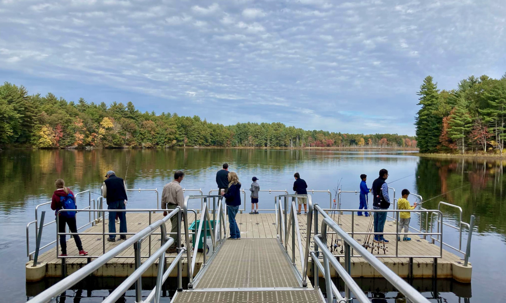

Overview
Many different kinds of recreational activities are welcome in the Refuge, and all visitors are encouraged to be aware of and respect others, whatever their pursuits.
Within the refuge, watercraft and boating are only permitted on the Assebet River. All other bodies of water in the refuge prohibit watercraft.
Please note that swimming and ice skating are prohibited in all bodies of water in the Refuge.
Hiking
The Refuge has over 15 miles of trails for walking and hiking.
These trails range are a mix of rugged trails and former military tracks, which are broad and flat, with some occasional sections of old pavement.
Most of the trails feature relatively gentle grades. Many of the trails near the ponds and wetlands are prone to flooding, though some sections have bridges and boardwalks.
For the safety of the public and wildlife, and to prevent erosion,
Refuge guidelines require visitors to remain on existing trails and to refrain from making new trails or attempting to create bridges over flooded sections.
To plan your hike, please see the trail map in the trail and recreation guide.
Printed maps are not generally available on site. Vistiors are encouraged to print or download one ahead of time, or take a picture of the map at an information kiosk.
In winter, hikers are asked to observe trail etiquette and avoid stepping in cross-country ski tracks.
Biking
Biking is allowed within the refuge, but only on designated ways and roads: Winterberry Way, Harry's Way, Taylor Way, White Pond Road and Patrol Road.
Please see the trail map in the trail and recreation guide to plan your ride. Trails marked with a solid line allow biking, while those with dashed lines are reserved for hiking only.
To help prevent erosion in mud season, bikers are encouraged limit rides to paved surfaces.
Winter is a beautiful time to visit the refuge and a great opportunity to find animal tracks!
When snow conditions allow, cross-country skiing and snowshoeing are permitted on all trails.
No snow shoeing or skiing is allowed on any part of Puffer Pond, and crossing it is prohibited.
Snow shoers are asked to observe winter etiquette and avoid stepping on ski tracks.
The refuge is a scenic and peaceful site for fishing, enjoyed by anglers young and old.
Fishing is only allowed from the two fishing piers on puffer pond. All fishing in the Refuge is catch and release.
All anglers must comply with all Massachussetts State fishing regulations, including fishing licenses.
The use of live bait is permitted, except for reptiles and amphibians.
Ice fishing is prohibited.
General Fishing Laws
Hunting is permitted in season. Hunters must follow all federal, state, and local regulations.
For detailed information on hunting seasons and regulations, please visit:
https://www.fws.gov/refuge/assabet-river/visit-us/activities/hunting
For hunting permits, please visit:
https://easternmarefuges.recaccess.com/ for more information.
Refuge Hunt Map:
https://www.fws.gov/media/assabet-river-national-wildlife-refuge-hunt-map-0